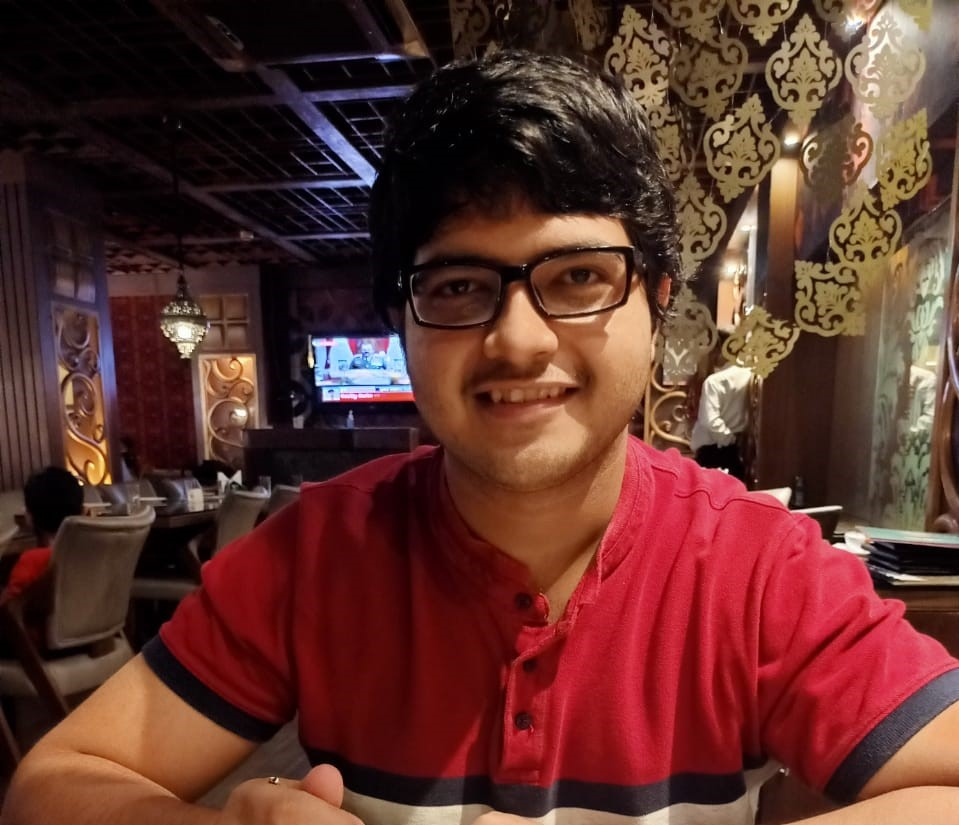
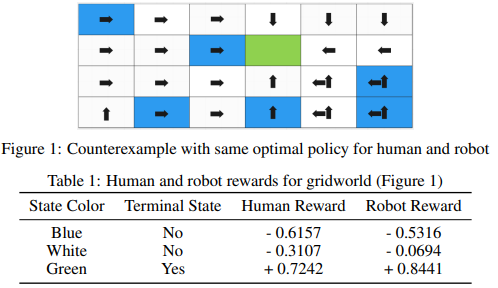
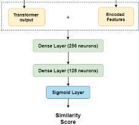
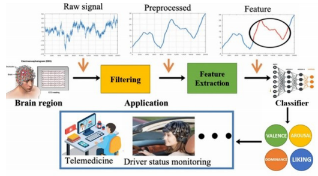

|
I am a final-year undergraduate student at the
Department of Computer Science and Engineering ,
Indian Institute of Technology Kharagpur.
At IIT Kharagpur, I am part of the Computer Vision and Intelligence Research (CVIR) Lab under the supervision of
Prof. Abir Das and
Dr. Rameswar Panda.
Email / CV / Twitter / Google Scholar / LinkedIn / GitHub / Within My Mind |
 |
|
|
| [Apr 22] | One paper accepted in the ML Reproducibility Challenge, 2021! |
| [Jan 22] | Started working as a six month research intern at PROSE, Microsoft Research |
| [Jan 22] | Selected to attend Research Week with Google from 8 - 11 Feb, 2022 |
| [Dec 21] | Received the Prof. J.C. Ghosh Memorial Endowment Prize for securing highest CGPA at the end of VI semester |
| [Nov 21] | Member of coding team (at IIT Kharagpur) responsible for organizing a pan-India engineering entrance exam |
| [Sep 21] | One paper accepted in the 8th workshop on ArgumentMining at EMNLP 2021 |
| [May 21] | Started working as research intern at Adobe Research, India on Topological Data Analysis |
| [May 21] | Accepted in IUSSTF-Viterbi program to intern at INK-Lab under Prof. Xiang Ren |
| [Dec 20] | One paper accepted in the 10th International Advance Computing Conference (IACC 2020) |
| [Jun 19] | Received the Technology Alumni Association (Delhi Chapter) Award for securing highest CGPA at the end of II semester |
|
My research interests lie majorly in the field of multi-modal learning, bias and explainability in deep learning models. My ultimate goal is make these models more understandable to human beings. I am currently working on my bachelors' thesis, investigating the effects of visual grounding in textual entailment task. In the past, I have worked on explanation based learning in PLMs and contextual bias in visual recognition models. |
|
|
|  |
S. Panigrahi*, S. Patnaik*, ML Reproducibility Challenge, 2021 paper | code We validate the claims made in the paper Value Alignment Verification and extend the experimental setup with larger action space, non-linear reward state-feature mapping, and other ablation studies. |
|  |
M. N. Kapadnis*, S. Patnaik*, S. Panigrahi*, V. Madhavan*, A. Nandy 8th workshop on ArgumentMining at Empirical Methods in Natural Language Processing (EMNLP), 2021 paper | code We leveraged existing state of the art pre-trained language models along with incorporating additional data and features extracted from the inputs (topics, key points, and arguments) to improve performance. We performed ablation studies to support our architecture. |
|  |
D. Acharya, R. Jain, S. Panigrahi, R. Sahni, S. Jain, S. P. Deshmukh, A. Bhardwaj 10th International Advance Computing Conference (IACC), 2020 paper | code We evaluate the performance of LSTM and CNN architectures and propose the best architecture for a problem of classifying EEG signals into four emotions, namely valence, arousal, liking, and dominance. We propose this as a ten-class classification task, in lieu of existing two or three class classification task. |
|
|

|
Supervisor(s): Prof. Xiang Ren, and Aaron Chan (PhD candidate) Worked on different attention-based regularization, and knowledge-distillation techniques to analyze the effect of explanations generated using different techniques in the performance of PLMs. |
|
Supervisor(s): Iftikhar Ahamath Burhanuddin, Gautam Choudhary, and Manoj Kilaru Implemented Topological Regularization in LSTM Encoder-Decoder architecture to leverage the topological information of customer sessions. Used sessions' latent representations for session clustering and providing fine-grained cluster insights. |
|

|
Supervisor(s): Dr. Kiran Garimella, Prof. Aaditya Dar, and Dr. Vasundhara Sirnate code Designed a complete framework to enhance and simplify the study of Facebook posts during elections. Analyzed distribution of page characteristics and post reactions, released by different FB pages, and their correlation with election results. Trained simple pipeline(s) to assign a political party to a post. Performed topic modeling to provide an overall sense to posts released by various political parties. |
|
|
|
NLP Term Project | Supervisor: Prof. Pawan Goyal Designed, implementated and fine-tuned various BERT-based approaches towards classification of sentences as contribution sentences or not. The entire team achieved the highest F1-score of 0.3101 in Post-competition phase on submission date of term project |
|
Software Engineering Lab Term Project | Course Instructor: Prof. Sudip Misra Created a web platform on the Django framework for literary enthusiasts' to share their stories, poems, and thoughts. Incorporated commenting and rating on a work; allowed subscribing and ranking the authors. |
|
|

|
Advisor (Jun '21 - current), Head (Dec '20 - Jun '21)
Kharagpur Data Analytics Group (KDAG), IIT Kharagpur GitHub Repo for Reading Sessions Initiated and organized research paper-reading sessions for students of IIT Kharagpur. Conducted Data Science and ML workshop for more than 600 registered students. The KDAG is a group of students enthusiastic about Data Science and Machine Learning, along with its applications. |

|
Advisor (Jun '21 - current), Head (Aug '20 - Jun '21)
Institute Wellness Group (IWG), IIT Kharagpur Guided web development team to design a website to spread awareness about our activities, and mental health. Planned refresher events, awareness drives and Gatekeeper training programs. IWG is a friendly neighborhood wellness body of the campus, responsible for organizing events that helps to aware students about mental health issues and methods to combat them. |
|
CV and Website last updated: Mar 2022 |
Thanks to Jon Barron for sharing this awesome template! |